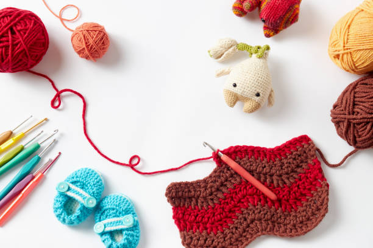
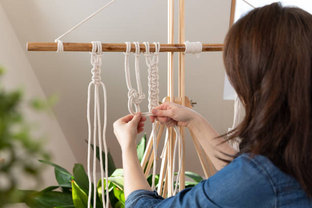

Crochet
El tejido a crochet o ganchillo es una técnica artística mediante la cual se utilizan hilos de lana y una aguja de tejer o ganchillo (de plástico, metal o madera), para la elaboración de diversos tejidos.

Dos agujas
Para este tipo de tejido, como bien indica el nombre, se necesitan dos agujas o agujas circulares e hilado. Las agujas vienen en diferentes grosores y longitudes y pueden ser de plástico, aluminio, madera o bambú.

Macrame
El macramé es la técnica de crear tejidos con nudos decorativos, se tiene conocimiento que esta técnica tiene su origen en Mesopotamia en los pueblos asirios y persas alrededor del año 2300 A.C, ellos fueron los primeros en realizar tejidos con nudos para decorar los bordes de los tapetes.